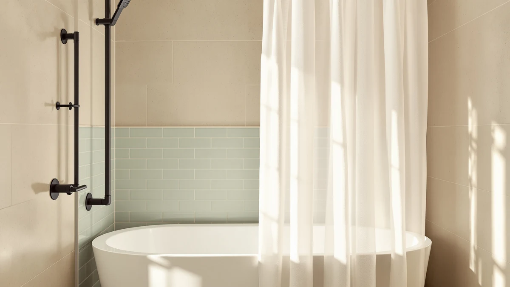

FADOTY No Hook Shower Review (2026): Worth It?
Prices and picks verified as of September 2026. Independent, reader-supported reviews.


Quick Answer
The Fadoty no hook shower curtain gets you the same grommet-free convenience as eachope's established no-hook curtains at the same $32.99 price, but it lacks the review history to back that price up yet. For most bathrooms, eachope's longer-reviewed linen-look curtain below is the safer buy, and Fadoty is worth it mainly if you want a lower-risk way to try a newer listing.
Our pick: FADOTY No Hook Shower Curtain — $32.99 Check Price on Amazon
Bottom line: our top pick is the FADOTY No Hook Shower Curtain and Liner Set at $32.99.
Things to Know Before You Buy
- No-hook shower curtains replace separate rings with a sewn sleeve or reinforced grommet band, so any standard fixed or tension rod still works.
- The Fadoty no hook shower curtain is a Polyester and PEVA blend and ships in a single 71-inch by 74-inch size, with no wider or longer cut available.
- At $32.99, it matches the price of eachope's no-hook linen curtains, which have sold on Amazon far longer and carry tens of thousands more verified ratings.
- Fadoty's listing does not show a public star rating or review count yet, so you are buying with less buyer feedback than an established no-hook curtain gives you.
- Measure your shower rod's diameter before you order. A grommet-free header still needs to slide over the rod, and a rod wider than 71 inches will leave gaps.
This Fadoty no hook shower review looks at whether a newer, less-reviewed brand can hold its own against the no-hook shower curtains that have dominated Amazon's bathroom category for years. Fadoty's version sells for $32.99, comes in a Polyester and PEVA blend, and ships in a single 71-inch by 74-inch cut built around a sewn, grommet-free header that slides directly onto a standard rod without separate rings.
We compared Fadoty against the no-hook curtains already covered on this site, most of them from eachope, to see where the newer listing holds up and where it comes up short. The fabric and sizing line up closely with what eachope charges the same $32.99 for, but Fadoty's review history is thin enough that we treat it as a backup option rather than a first choice for most bathrooms. Renters and first-apartment buyers who just need a standard-size curtain get the best deal from Fadoty's lower price, while anyone who leans on star ratings before buying should lean toward eachope instead.
Why You Should Trust Us
Best Shower Curtains reviews bathroom products by comparing manufacturer specs, current pricing, and verified owner feedback pulled from the retailers that sell them, rather than by running a private testing lab. Ilane Tall, our home and bath editor, researched the Fadoty no hook shower curtain against the eachope no-hook curtains this site already recommends, checking fabric claims, dimensions, price parity, and the volume and consistency of Amazon reviews before writing this review. We revisit prices and availability on a regular schedule and flag it clearly when a listing, like Fadoty's, has not yet built up the review history we would want to see. When two products share a price and a construction method, as Fadoty and eachope do here, the comparison comes down to that review history and how much weight you want to put on it.
Our Research Experience
We do not run a physical testing lab, and we have not installed the Fadoty curtain in a shower ourselves. Our process instead compares published specs, material composition, and pricing against the no-hook shower curtains we already cover, then checks that against what verified Amazon buyers report about fit, drape, and durability on comparable listings. For Fadoty specifically, that meant lining up its Polyester and PEVA blend and 71 by 74 inch cut against eachope's linen-look no-hook curtains at the same $32.99 price, since eachope's listings carry a much deeper review history to draw conclusions from. We flag it clearly when a claim can't be verified against real owner feedback, such as long-term durability on Fadoty's newer listing, rather than guess.
Overview & Specs

FADOTY No Hook Shower Curtain
What we like
- Sewn, grommet-free header skips separate hooks or rings entirely
- Polyester and PEVA blend resists water and mildew better than plain cotton at this price
- Matches eachope's $32.99 price without charging more for the no-hook convenience
Flaws but not dealbreakers
- Ships in one size only, 71 by 74 inches, with no wide or extra-long option
- No public star rating or review count at the time of writing, so you have less buyer feedback to check than on an established listing
- Polyester and PEVA won't feel as soft or drape as well as eachope's linen-look fabric
| Material | Polyester / PEVA |
| Size | 71"W x 74"L (Pack of 1) |
The Fadoty no hook shower curtain replaces the usual ring-and-grommet setup with a reinforced sleeve sewn along the top edge, so it slides directly onto a standard shower rod without any separate hardware. That construction is common among no-hook curtains in this price range, and Fadoty's specs track closely with what eachope charges the same $32.99 for: a Polyester and PEVA blend, a single 71-inch by 74-inch cut, and machine-washable care instructions on a cold, gentle cycle.
Fadoty differs from the eachope curtains on this page mainly in review history, not construction. Fadoty's Amazon listing does not carry a public star rating or review count at the time of writing, while eachope's comparable no-hook curtain has more than 26,000 verified ratings at a 4.7 average. That gap doesn't make Fadoty a worse curtain on its own merits. It means you have less buyer feedback to check against the listing photos before you commit, which matters more if you're picky about drape or color accuracy and less if you mainly want the grommet-free convenience at a fair price. Both curtains list the same care instructions, so day-to-day upkeep shouldn't be the deciding factor between them.
What We Liked
The grommet-free design is the clearest reason to consider this curtain. You hang it the same way you would with a set of rings, except there's nothing separate to lose, bend, or replace when a hook eventually snaps. The Polyester and PEVA blend also holds up to daily splashing and steam better than a pure cotton curtain would, and it dries faster between showers. At $32.99, Fadoty doesn't ask you to pay a premium for that convenience. It charges exactly what eachope's established no-hook curtains cost, so picking the newer brand doesn't cost you anything extra beyond the review history you're giving up. The single 71-by-74-inch size also matches the dimensions of a standard shower stall closely enough that most buyers won't need to hem or adjust it after installation.
What Could Be Better
The lack of review history is the drawback that matters most. Amazon reviews aren't perfect, but 26,000 of them on a comparable eachope listing give you a much clearer picture of long-term wear, sizing accuracy, and color match than a listing with no public rating yet. The single-size cut is also limiting: if your rod runs wider than a standard tub or your ceiling calls for an extra-long drop, Fadoty doesn't offer a bigger variant, and you would need an extra-wide or extra-long no-hook curtain from another brand instead. The Polyester and PEVA fabric, while practical, won't give you the softer, linen-like drape that eachope's fabric curtains offer at the same price. And because Fadoty's rating count is still building, you're relying more on the spec sheet and less on other buyers' real-world experience than you would with a longer-established listing.
Who Is It For?
This curtain suits renters and first-apartment bathrooms where a standard 71-inch by 74-inch drop is all you need, and where the main goal is skipping separate hooks without paying more for the privilege. It's a reasonable pick if you've already read through eachope's reviews and simply want a similarly priced curtain from a different brand, or if you don't mind being an early buyer on a newer listing. If a deep review history and a proven track record matter more to you than trying something newer, eachope's no-hook linen curtains are the safer starting point, since they carry tens of thousands of verified ratings that Fadoty's listing doesn't have yet. Skip Fadoty if you need a size beyond 71 by 74 inches or if a documented track record is a dealbreaker for you.
Alternatives to Consider
If the thin review history on the Fadoty no hook shower curtain gives you pause, these three no-hook curtains from eachope cover the same grommet-free convenience at the same $32.99 price, backed by a much longer track record of verified buyer feedback.

Editor’s Pick
eachope No Hooks Needed Linen
eachope's linen-look no-hook curtain carries more than 26,000 verified ratings at a 4.7 average, the deepest review history of any option on this page, and it matches Fadoty's $32.99 price exactly while offering a softer drape.
$32.99
Check Price on Amazon
Best Value
No Hooks Polyester Textured Shower
This textured polyester no-hook curtain holds a 4.7 average across roughly 2,180 verified ratings. It's a proven fabric and grommet-free design at the same price as Fadoty.
$32.99
Check Price on Amazon
Premium Choice
eachope No Hooks Needed Linen
A second cut of eachope's linen-look design, rated 4.7 stars from about 623 verified buyers so far, for shoppers who like the Editor's Pick fabric but want a different size or color.
$32.99
Check Price on AmazonDoes the Fadoty no hook shower curtain actually need hooks?
No.
What size is the Fadoty no hook shower curtain?
It ships in one size, 71 inches wide by 74 inches long, which covers most standard tubs and shower stalls.
Frequently Asked Questions
Does the Fadoty no hook shower curtain actually need hooks?
No. The curtain has a reinforced, grommet-free header sewn along the top edge that slides straight onto a standard shower rod, so there is nothing separate to buy or lose. You still need a rod with roughly a 1-inch diameter for the sleeve to fit over, and a rod wider than the curtain's 71-inch width will leave gaps at the ends.
What size is the Fadoty no hook shower curtain?
It ships in one size, 71 inches wide by 74 inches long, which covers most standard tubs and shower stalls. If your bathroom needs an extra-wide or extra-long drop, Fadoty does not currently sell a bigger cut, so you would need to look at eachope's sizing options or another no-hook brand instead.
Is the Fadoty no hook shower curtain worth it compared to eachope's no-hook curtains?
At the identical $32.99 price, eachope's linen-look no-hook curtain carries more than 26,000 verified ratings at a 4.7 average, while Fadoty's listing has not built up a public rating yet. If a long track record matters more to you than trying something new, buy the eachope curtain. If you are comfortable being an early adopter at the same price, Fadoty is a low-risk way to test a newer no-hook design.
Final Verdict
This Fadoty no hook shower review comes down to price parity without a proven track record yet. Fadoty charges the same $32.99 as eachope's no-hook linen curtains, delivers the same grommet-free convenience, and covers a standard 71-inch by 74-inch shower. If you want the security of tens of thousands of verified ratings behind your purchase, buy the eachope curtain instead. If you're comfortable being an early buyer at the same price, Fadoty is a reasonable, low-risk way to try a newer no-hook shower curtain in your own bathroom, and nothing in the specs suggests it will underperform its eachope rivals.